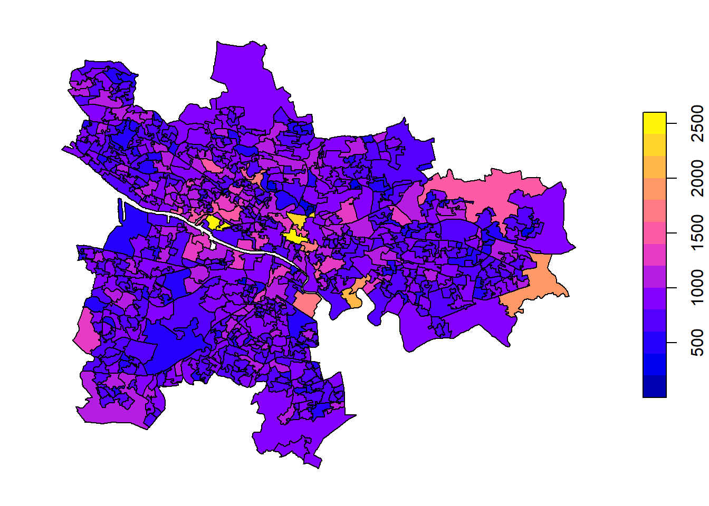

4 Population
4.1 Name
- Small Area Population Estimates (SAPE) from the National Records of Scotland
- Mid-2020 Population Estimates Scotland
4.3 Metadata
- SAPE2017: 2017 NRS small area population estimates (Count)
- WAPE2017: 2017 NRS small area population estimates and state pension age (Count)
- Mid-2020 Population Estimates Scotland (Count). Detailed Metadata regarding the metrics, accuracy, and completeness are all linked here
Age
Gender
4.4 Source
- Small area estimates: https://www.nrscotland.gov.uk/statistics-and-data/statistics/statistics-by-theme/population/population-estimates/2011-based-special-area-population-estimates/small-area-population-estimates
- Scotland Mid-2020 by age and gender: https://www.nrscotland.gov.uk/statistics-and-data/statistics/statistics-by-theme/population/population-estimates/mid-year-population-estimates/mid-2020
4.5 Examples

Figure 4.1: 2017 NRS small area population estimates.
하이 헬로우 안녕
| DataZone | DZName | SAPE2017 |
|---|---|---|
| S01010260 | City Centre East - 02 | 2544 |
| S01010284 | Finnieston and Kelvinhaugh - 03 | 2429 |
| S01010286 | Finnieston and Kelvinhaugh - 05 | 2420 |
| S01010261 | City Centre East - 03 | 2269 |
| S01010048 | Dalmarnock - 03 | 2081 |
| S01010088 | Baillieston East - 01 | 1916 |
| S01010258 | Gallowgate North and Bellgrove - 05 | 1826 |
| S01010050 | Parkhead West and Barrowfield - 02 | 1822 |
| S01010257 | Gallowgate North and Bellgrove - 04 | 1732 |
| S01010314 | Keppochhill - 06 | 1682 |